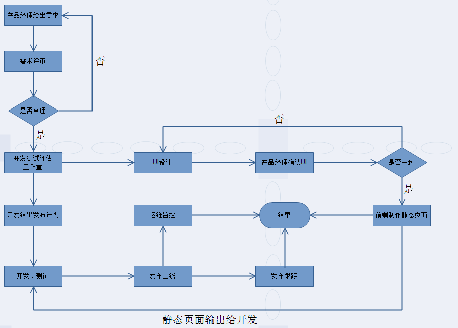
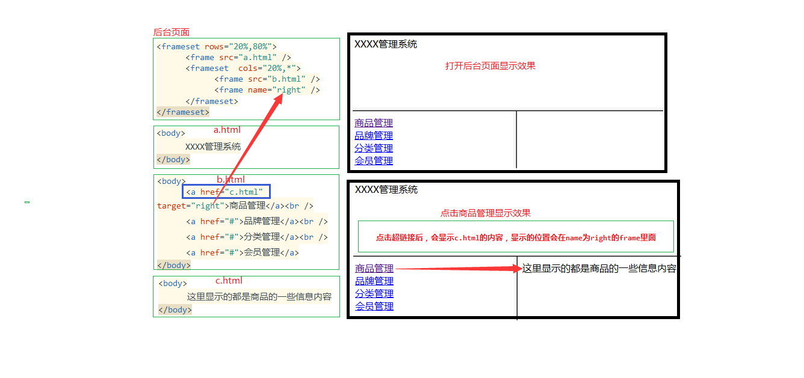

<font> 的 color属性="red"
<font> 的 face属性="楷体"
<font> 的 size属性="1"
<font> 的 size属性="2"
<font> 的 size属性="3"
<font> 的 size属性="4"
<font> 的 size属性="5"
<font> 的 size属性="6"
<font> 的 size属性="7" 最大
<h1>最大字体
<h2>字体
<h3>字体
<h4>字体
<h5>字体
<h6>最小字体
4.1 <hr> 的 size属性=20高度,size没有最大值↓
4.2 <hr> 的 noshade属性=noshade,没阴影,纯色↓
“中关村黑马程序员训练营”是由传智播客联合中关村软件园、CSDN， 并委托传智播客进行教学实施的软件开发高端培训机构，致力于服务各大软件企业，解决当前软件开发技术飞速发展， 而企业招不到优秀人才的困扰。 目前，“中关村黑马程序员训练营”已成长为行业“学员质量好、课程内容深、企业满意” 的移动开发高端训练基地，并被评为中关村软件园重点扶持人才企业。
黑马程序员的学员多为大学毕业后，有理想、有梦想，想从事IT行业，而没有环境和机遇改变自己命运的年轻人。黑马程序员的学员筛选制度，远比现在90%以上的企业招聘流程更为严格。任何一名学员想成功入学“黑马程序员”，必须经历长达2个月的面试流程，这些流程中不仅包括严格的技术测试、自学能力测试，还包括性格测试、压力测试、品德测试等等测试。毫不夸张地说，黑马程序员训练营所有学员都是精挑细选出来的。百里挑一的残酷筛选制度确保学员质量，并降低企业的用人风险。
中关村黑马程序员训练营不仅着重培养学员的基础理论知识，更注重培养项目实施管理能力，并密切关注技术革新，不断引入先进的技术，研发更新技术课程，确保学员进入企业后不仅能独立从事开发工作，更能给企业带来新的技术体系和理念。
一直以来，黑马程序员以技术视角关注IT产业发展，以深度分享推进产业技术成长，致力于弘扬技术创新，倡导分享、 开放和协作，努力打造高质量的IT人才服务平台。
<img> 的 src="https://www.baidu.com/img/bd_logo1.png"(图片位置)
<img> 的 width="150px" 和 height="100px"(图片宽高属性,单位px像素)
<img> 的 alt="logo图片"(当图片无法正常显示时的提示信息,不同浏览器显示不同)

<ul> 的 type 属性:左侧圆点类型. 也可以在<li>列表项里定义type属性
<ul> 的type属性可以设置3个值: disc , square , circle
<li> 的type属性可以设置8个值: disc , square , circle , 1 , a , A , i , I
- CSDN type="disc"实心圆点(默认属性)
- 百度 type="square"实心方块
- 淘宝 type="circle"空心圆环
- 阿里 type="1"以数字编号
- 腾讯 type="a"以小写字母编号
- 网易 type="A"以大写字母编号
- 传智 type="i"以ivx编号
- 传智 type="I"以IVX编号
-
<ol> 的type 属性:左侧数字/字母类型. 也可以在<li>列表项里定义type属性
<ul> 的type属性可以设置5个值:1 , a , A , i , I
<li> 的type属性可以设置8个值:disc , square , circle , 1 , a , A , i , I
- CSDN type="disc"实心圆点
- 百度 type="square"实心方块
- 淘宝 type="circle"空心圆环
- 阿里 type="1"以数字编号(默认属性)
- 腾讯 type="a"以小写字母编号
- 网易 type="A"以大写字母编号
- 传智 type="i"以ivx编号
- 传智 type="I"以IVX编号
-
<ol> 的start属性:从几开始编号
<ol start="6">- 阿里巴巴 type="1"以数字编号(默认属性)
- 腾讯 type="a"以小写字母编号
- 网易 type="A"以大写字母编号
-
<ol> 的reversed属性:从几开始倒数编号 ,注意:h5特有属性
<ol reversed="1">- 阿里巴巴 type="1"以数字编号(默认属性)
- 腾讯 type="a"以小写字母编号
- 网易 type="A"以大写字母编号
- <a> 的 href属性:跳转地址.(href="javascript:void(0);" :点击后什么都不做)
- <a> 的 target属性:跳转后位置
https://www.baidu.com target="_blank"跳转后另外打开一个标签
https://www.baidu.com target="_parent"跳转后??
https://www.baidu.com target="_search"跳转后??
https://www.baidu.com target="_top"跳转后??
- 对于所有浏览器来说，这意味着要把这段文字用斜体来显示
- 尽管现在<em> 标签修饰的内容都是用斜体字来显示，但这些内容也具有更广泛的含义，将来的某一天，浏览器也可能会使用其他的特殊效果来显示强调的文本。如果你只想使用斜体字来显示文本的话，请使用 <i> 标签。
- 除强调之外，当引入新的术语或在引用特定类型的术语或概念时作为固定样式的时候，也可以考虑使用 <em> 标签。例如，W3School 经常对重要的术语使用 <em> 标签。<em> 标签可以用来把这些名称和其他斜体字区别开来。
- 浏览器通常是用加粗的字体（相对于斜体）来显示其中的内容，这样用户就可以把这两个标签区分开来了。
- 如果常识告诉我们应该较少使用 标签的话，那么<strong> 标签出现的次数应该更少。
在实际开发中, div + css 布局非常常见,但对于更熟悉服务器程序的Java程序员来说,没有相应的知识底蕴,我们这儿用<table>
- <table>里面嵌套 <tr>(行). <tr>里面嵌套 <td>(列)
- <table>的 border="1px" 属性:边框
- <table>的 bordercolor="red" 边框颜色
- <table>的 bgcolor="pink" 属性:背景颜色
- <table>的 width="300px" height="150px" 宽高属性
- <table>的 background="../img/big01.jpg" 背景图片,设置这个属性后bgcolor属性无效
- <table>的 align="center" 整个表格的显示位置,center:居中
- <table>的 cellspacing="0px" 单元格之间的间距(如果不去掉会有空白间距)
- <table>的 cellpadding="0px" 单元格里内容与边框的距离
- <tr>的 height="100px" 这一行的高度
- <tr>的 bgcolor="gold" 背景颜色
- <tr>的 background="../img/logo2.png" 背景图片.如果设置了bgcolor,会和bgcolor一起显示
- <tr>的 align="center" 每一个细胞内容的位置,center:居中
- <td>的 bgcolor="gold" 背景颜色
- <td>的 background="../img/small07.jpg" 背景图片,设置这个属性后bgcolor属性无效
- <td>的 align="left" 这个细胞内容的位置,left:居左
| 1行1列 | 1行2列 | 1行3列 |
| 2行1列 | 2行2列 | 2行3列 |
| 3行1列 | 3行2列 | 3行3列 |
<td>的 colspan="2" 跨列,把1行2列注释掉,否则会多出一列.
| 1行1列 | 1行2列 | 1行3列 | 1行4列 | |
| 2行1列 | 2行2列 | 2行3列 | 2行4列 | |
| 3行1列 | 3行2列 | 3行3列 | 3行4列 | |
| 4行1列 | 4行2列 | 4行3列 | 4行4列 | |
<td>的 rowspan="2" 跨行,把3行1列注释掉,否则会多出一列.
| 1行1列 | 1行2列 | 1行3列 | 1行4列 |
| 2行1列 | 2行2列 | 2行3列 | 2行4列 |
| 3行1列 | 3行2列 | 3行3列 | 3行4列 |
| 4行1列 | 4行2列 | 4行3列 | 4行4列 |
<td>的 colspan & rowspan都="2" 跨行&跨列,效果如下
| 1行1列 | 1行2列 | 1行3列 | 1行4列 | |
| 2行1列 | 2行2列 | 2行3列 | 2行4列 | |
| 3行1列 | 3行2列 | 3行3列 | 3行4列 | |
| 4行1列 | 4行2列 | 4行3列 | 4行4列 | |
<td>的 colspan & rowspan都="2" 跨行&跨列,效果如下
里面表<table> width="100%" height="100%"
| 1行1列 | 1行2列 | 1行3列 | 1行4列 | ||||||||||
| 2行1列 |
|
2行3列 | 2行4列 | ||||||||||
| 3行1列 | 3行2列 | 3行3列 | 3行4列 | ||||||||||
| 4行1列 | 4行2列 | 4行3列 | 4行4列 | ||||||||||
定义如何将窗口分割为框架,定义了一系列行或列
- <frameset>的属性 rows="25%,*" cols="75%,25%" 的值规定了每行或每列占据的屏幕面积
- <frameset> 里的标签 frame="1.基础.html" ,定义了放置在每个框架中的HTML文档.
- ★重要提示:不能将 <body> 标签与 <frameset> 标签同时使用
- <frame> 和 <frameset> 可以互相嵌套
- <frame>的 src="1.基础.html" 分割部分的显示内容
- <frame>的 noresize="noresize" 用户不可以拖动边框来改变它的大小
- <frame>的 name="BottomRight"(自定义命名) 当左边点击链接的时候,右边这个frame显示对应的html
- 框架结构标签 示例:
- 